Fortuna Audaces Iuvat
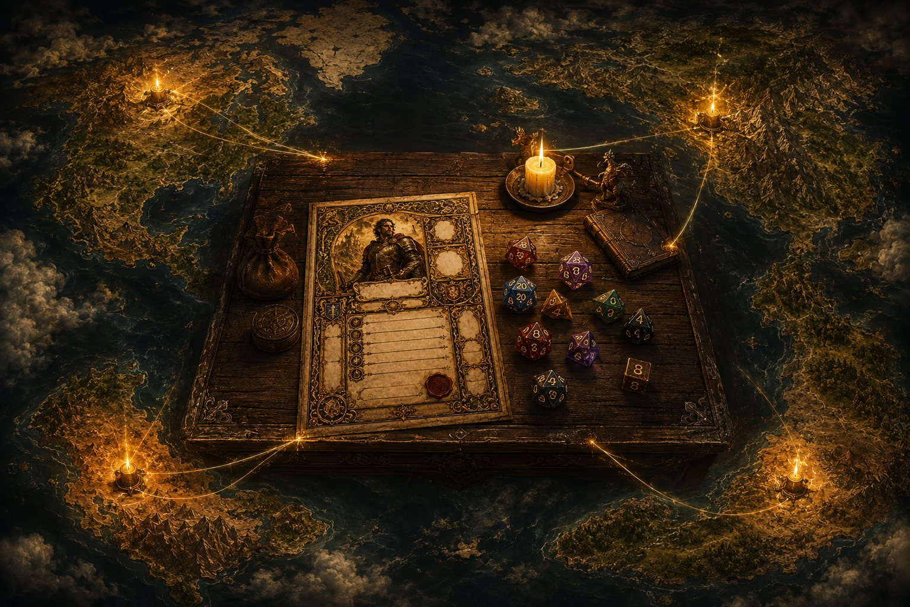
Character sheets worth framing. A hand-painted folio for classic tabletop roleplaying — keep your heroes as living sheets on iPhone and iPad, roll dice that feel like dice, and print a page worth putting on the table.
Download on the App Store — free, with two complete rule sets, one hero, the dice tray and printing. The Folio is a single purchase that lifts the one-hero limit and unlocks the painted class pages.
Music: “Oppressive Gloom” by Kevin MacLeod (incompetech.com) · licensed under Creative Commons: By Attribution 4.0
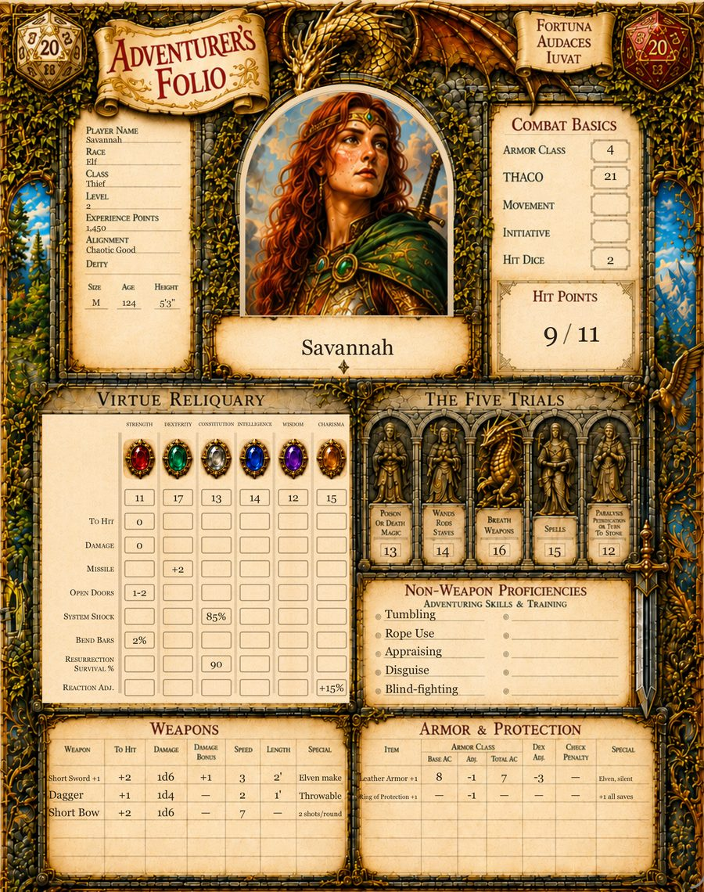
This one is a folio — an illuminated page you actually want to look at, with your character’s numbers typeset into it as though a scribe had filled them in.
Nothing is a text box. Every value is set into the painted art at the place the art left for it. Tap a saving throw and the dice roll. Tap a score and edit it where it sits.
Drop in a picture of your hero and it clips into the painted window, under the same stone-and-gilt arch the page was drawn with.
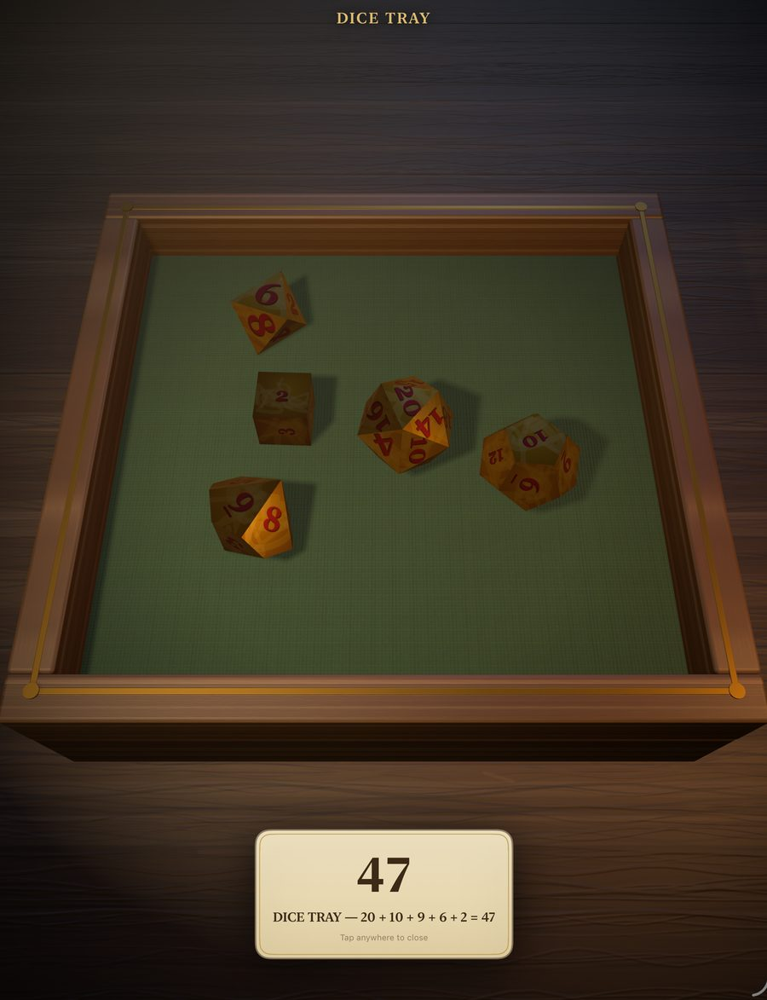
A real tray, in three dimensions, with dice that tumble and settle. Tap a save, a check or an attack anywhere on the sheet and watch it land — then read the verdict off the felt.
The sets are collector-grade: gemstone, metal and bone, each one modelled rather than tinted. Two come with the app; the rest are a one-time Dice Pack.
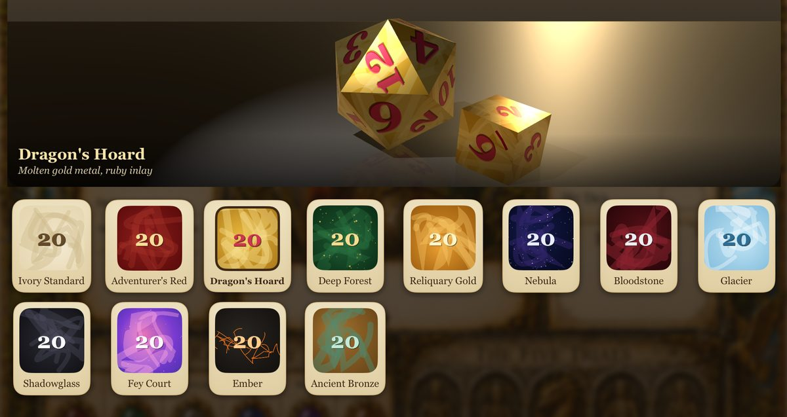
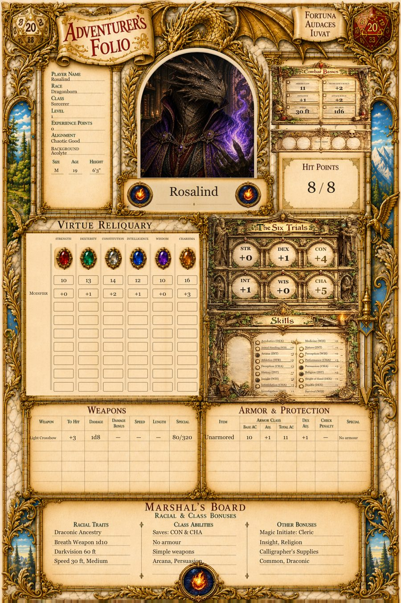
1st Edition (1977–1988) and the 2024 revision are both in the app from the start and both free. 2nd Edition (1989–1999)* — nine classes, seven races, THAC0 and its own saving-throw tables — and 5th Edition (2014) are each a separate purchase, for tables still playing them.
Each gets its own page architecture and its own correctly computed numbers — five saving throws or six, THAC0 or an attack bonus, weapon proficiencies or skills. Neither is a reskin of the other: the panels that have no meaning in your edition are not there.
And the pages themselves are painted separately, down to the class ledgers — a 2024 sheet is not a first-edition sheet with different numbers on it.*
Pick the ruleset when you make the hero. The sheet speaks your table’s dialect from then on.
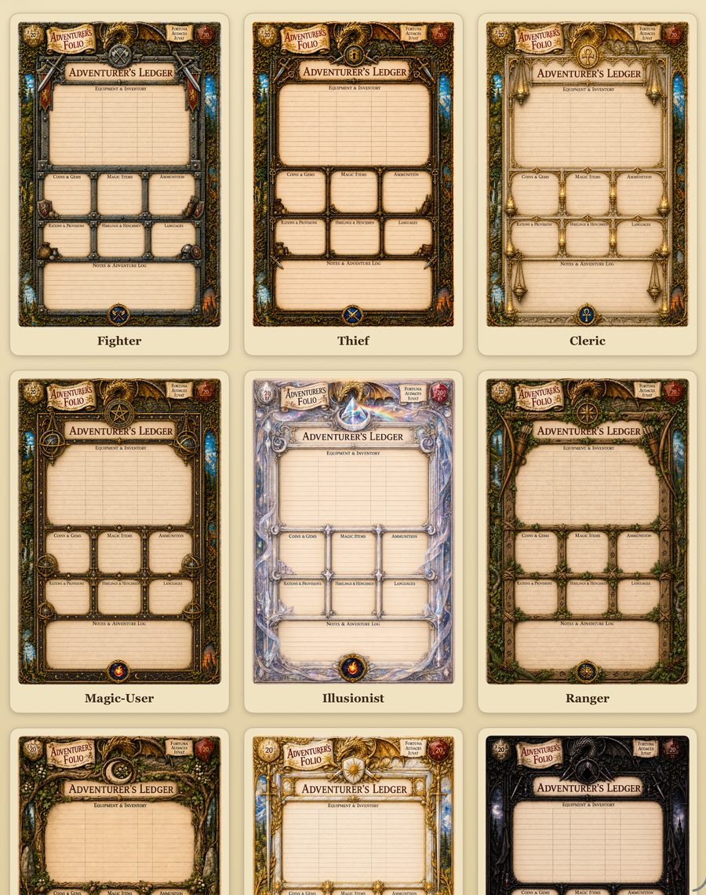
The thief’s guild book, the paladin’s temple codex, the magic-user’s illuminated grimoire, the druid’s grove tome. Each class carries its own ledger page, its own seal and its own palette.
Your hero’s second page is the one that belongs to them.
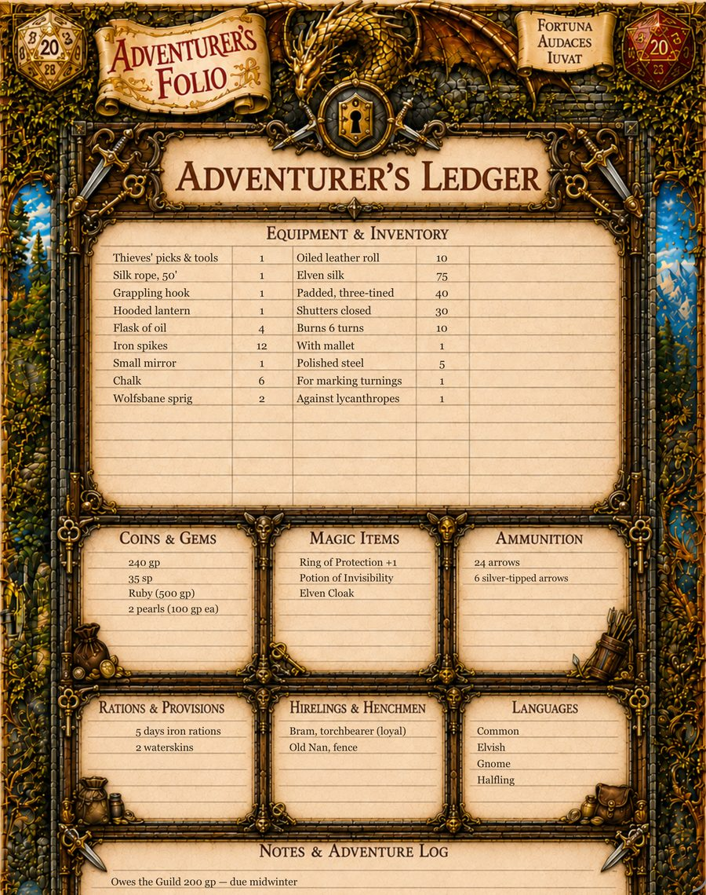
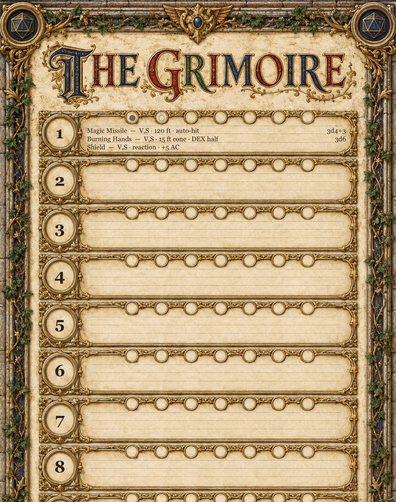
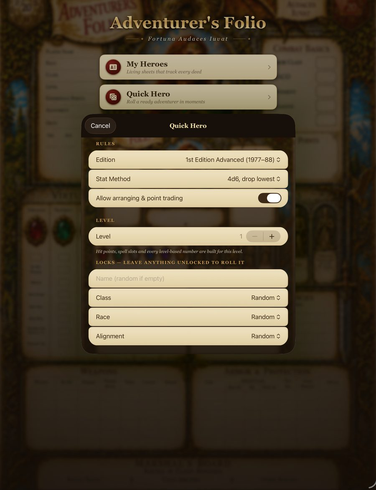
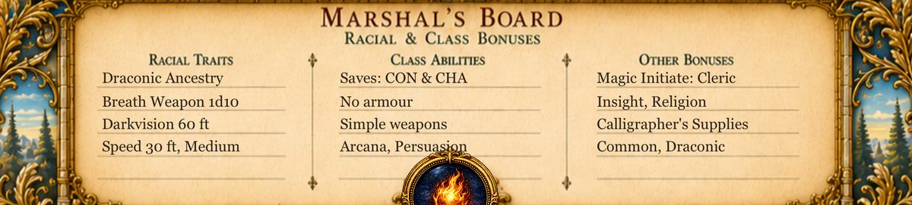
Darkvision. Which saves you are good at. The tool your background gave you and the languages you speak. They live at the bottom of the page, in three painted columns, instead of in a book you have to put down your dice to open.
Roll a hero and the board arrives already filled from your edition’s own rules.* Build one by hand and the lines are yours to write.
Quick Hero rolls a legal character for the edition you pick — class, race, alignment, scores, hit points and all — and lets you trade points around before you keep it. Or build one by hand, a line at a time.
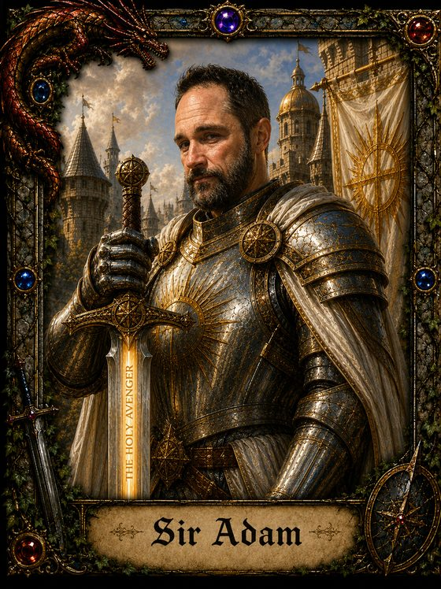
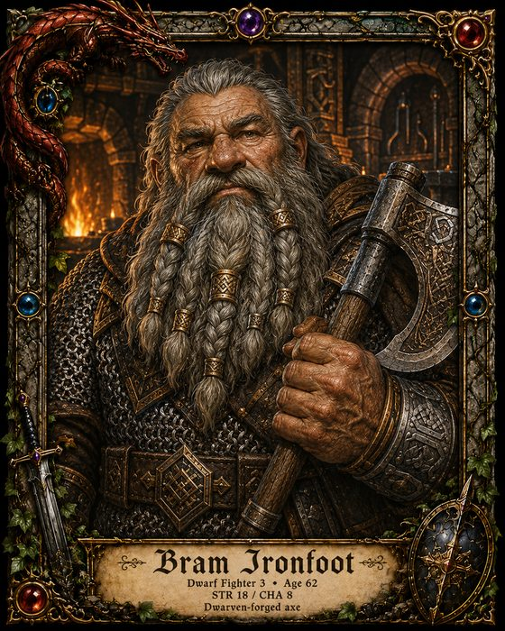
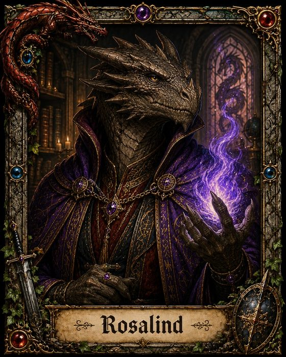
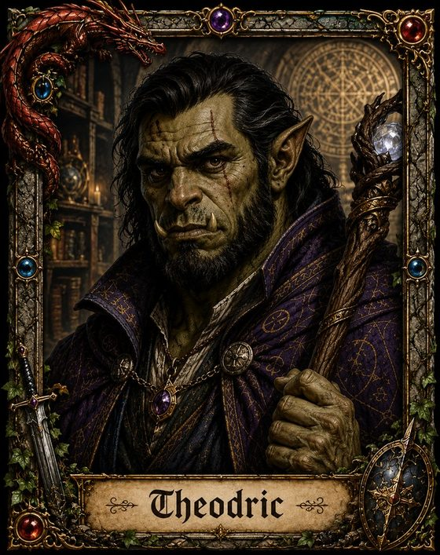
The best free character tools for fifth edition are automated PDFs. You fill them in on a computer and they do the arithmetic for you. They are genuinely good — if you play 5e at a desk, with a laptop open and a shelf of sourcebooks beside you, they are hard to beat.
They are also why this app exists. A PDF cannot be a page worth framing, it cannot roll a die, and it cannot come to the table in your pocket.
| An automated PDF | Adventurer’s Folio | |
|---|---|---|
| Where it runs | A Windows or macOS desktop, with Adobe Acrobat installed | iPhone and iPad |
| On a phone | The file opens. The automation does not run | The phone is the app |
| Rule sets | Fifth edition | 1st Edition, 2nd Edition,* 5th Edition and the 2024 revision — each with its own rules engine, not one engine reskinned |
| What it looks like | A form, laid out well | A painted illuminated page, with your numbers typeset into it |
| Changing a number | Click the field and type | Tap the number where it sits on the page |
| Dice | None. A document cannot roll | A 3D tray with collector-grade sets, and a log of every roll |
| Spells | Generated spell sheets for your class | 1,461 spells* that complete themselves as you type on a hero's page — full text for both fifth-edition rule sets, names and numbers for 1st and 2nd — plus any list your table imports |
| Handing something over | Send the file | AirDrop a hero, a spell list, or a single item from one player’s pack to another’s* |
| Printing | A printer-friendly form | The painted page itself, US Letter, ready for pencil and ink |
| What it costs | Free, or pay what you want | Free for your first hero. $12.99 once for the rest — no subscription |
If you play fifth edition on a desktop and own every sourcebook, the PDFs have nine years of head start on us and we would rather say so than pretend otherwise. If you play at a table, on a phone, in an edition older than 2014, or you simply want the sheet to be beautiful — that is what this is for.
No subscription and no renewals. Everything below is a single payment, and what you buy stays bought.
The folio has no accounts, no sign-in and no servers. It collects nothing about you, and it never sends your characters anywhere. It works with no signal at all. See the privacy policy — it is short, because there is very little to say.
No, and you do not need to look anything up either. The app knows the tables for the ruleset you picked and does the arithmetic as you play. It is not a teacher and it will not tell you what to do on your turn — that is what the table is for.
Yes. Build one by hand, a line at a time, and put in whatever your existing sheet says. Nothing is computed that you cannot overwrite.
No. It is a native iPhone and iPad app, and the painted pages are the reason.
Entirely. There is no server to reach.
They go with it, the same as any file on your device. Swipe a hero and tap
Export and you get a .folio file — a complete copy you keep,
and the same file that moves a character to another device. Import Character
brings it back.
No. It is an independent app, not affiliated with or endorsed by any game publisher. It ships no adventures and no monsters.
The fifth-edition spells are the ones the System Reference Document licenses under Creative Commons, and they carry their full text.* The 1st and 2nd Edition spells are names and printed numbers only — level, range, duration, components — because those books are not licensed for anyone to reprint, and we will not pretend otherwise. Keep the handbook open for what a spell does. Anything else your table uses, you can import.
* These arrive in the 1.1 update, free to everyone who has the app, shortly after launch. They are marked because a page that describes an app should describe the one you can actually download today. The screenshots throughout this page are taken from that build, so a few small things will look newer here than on your device until it lands.
iPhone and iPad, iOS 17 or later.
Questions, bugs and feature requests are all welcome — see the support page.